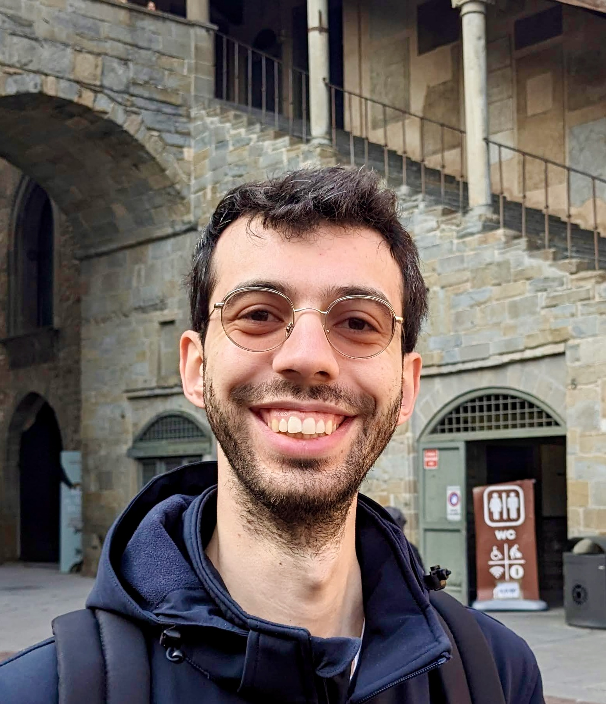
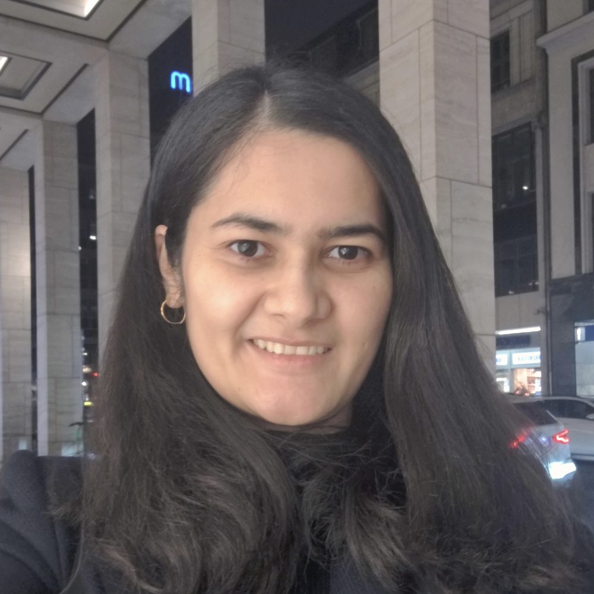
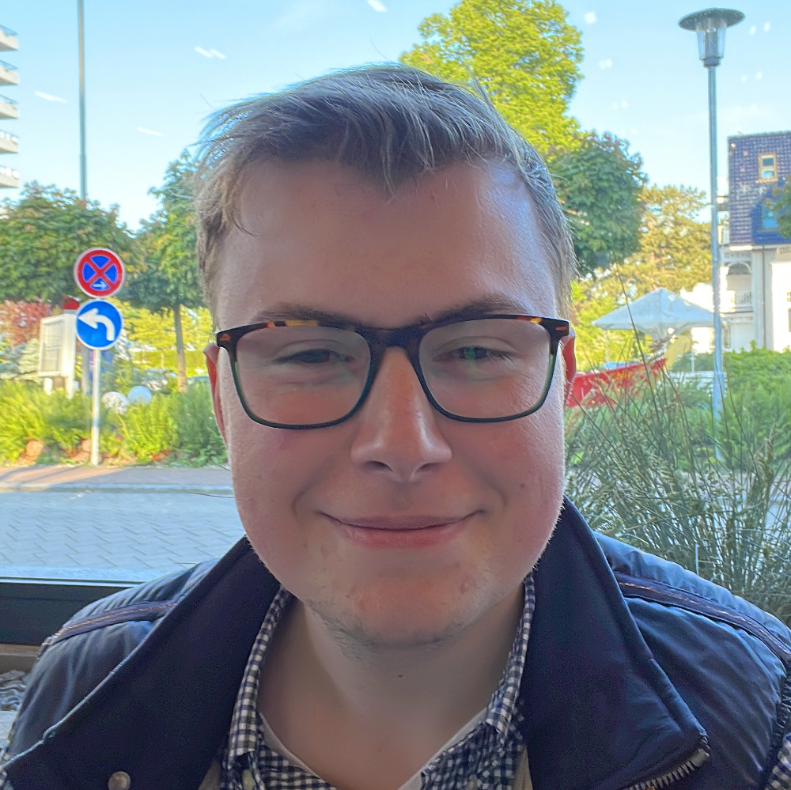

Research group at Hamburg Observatory
Emmy Noether Research Group
I am building a new research group at Hamburg Observatory focused on the formation of structures in the early Universe, specifically we aim to understand the emergence of quasars - active growing supermassive black holes. In order to expand the quasar redshift frontier and build statistical samples at Cosmic Dawn, we are using wide-area surveys in concert with large ground-based and space-borne observatories to conduct spectroscopic identification campaigns and multi-wavelength follow-up observations. The quasar selection strategies employ machine-learning methods on large astronomical data sets. Follow-up observations are reduced using state-of-the-art astronomical data reduction software and analysed using modern statistical inference techniques.
In this context group members use and are trained in the following skills to conduct their research:
- spectroscopic data reduction
- large-scale data analysis
- machine-learning methods
- robust statistical inference techniques
- software development (Python 3)
Positions
At this point I am offering no PhD or Postdoc position in my group.
Thesis projects
Bachelor thesis projects:
The radio-properties of extremely luminous quasars
Description: The student will analyse LOFAR radio data of a sample of extremely luminous quasars to study their radio properties and compare them to the general quasar population.
Required skills: Python programming (analysis, visualization)
Supervisor(s): Dr. Jan-Torge Schindler & Radha Gharapurkar (M.Sc.)
Master thesis projects:
Quasar spectroscopy and generative machine learning
Description: The student will continue to develop a generative machine learning model (Variational Auto Encoder), designed to generate quasar spectroscopy and explore its use in identifying incorrectly classified quasars in large survey data.
Required skills: Advanced Python programming (analysis, visualization)
Helpful skills: Machine learning (Variational Auto Encoders)
Supervisor(s): Dr. Francesco Guarneri & Dr. Jan-Torge Schindler
Group members
| Dr. Jan-Torge Schindler (Group leader) | ||
 |
Dr. Francesco Guarneri (Postdoctoral Researcher) Francesco is leading the high redshift quasar search efforts with Euclid mission data. He is using machine learning models (e.g., XGBoost) to select quasar candidates in Euclid data. The training set for the selection is built from synthethic quasar spectra, that were generated using a generative machine learning model (Variational Auto Encoder) we are developing in the group. |
|
 |
Radha Gharapurkar (Ph.D. student) Radha current work focuses on the demographics of luminous quasars at redshifts z~3.5 to z~6. Based on a large (58) sample of near-infrared spectroscopy of extremely luminous quasars, she is studying their physical properties (e.g., black hole mass, accretion rate) to derive the black hole mass function at z~3.5. Extending this work to z~6 will allow her to study the evolution of the quasar population over the first billion years of the Universe. |
|
| Violet Moore (M.Sc. student) Violet is a first year Master of Physics student at Hamburg University. She has started a project to develop a database for high redshift quasars and AGN. The database will include source properties (e.g., redshift, luminosity, emission line properties) and will be used to study the demographics of high redshift accreting supermassive black holes. |
||
| Katharina Jurk (Ph.D. student, joining in May 2025) | ||
Fromer group members
 |
Niklas Knop (B.Sc. student) In his Bachelor thesis Niklas looked for quasars with similar properties to J0100+2802, the most luminous quasar known at z~6.3. He used the spectra of SDSS quasars to identify low-redshift analogues and evaluate claims of lensing magnification in the J0100+2802 spectrum. |
|